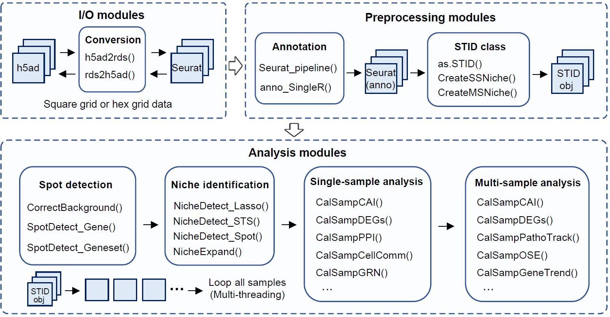
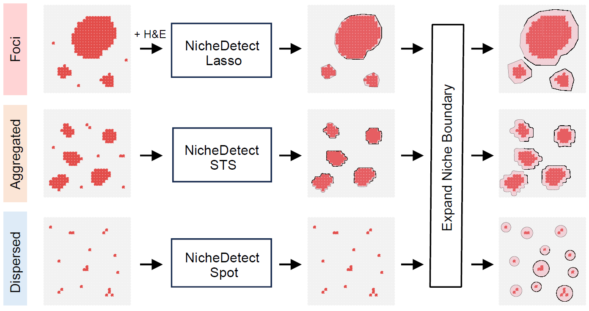
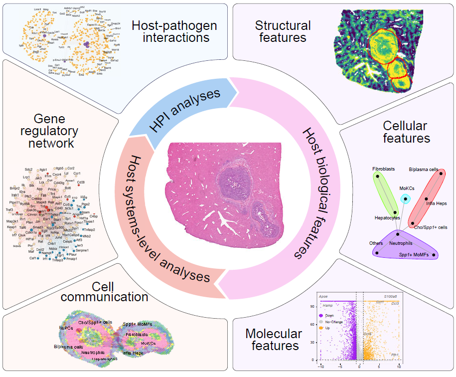

Overview
STID provides an infection-aware workflow for spatial
transcriptomics data. Starting from a processed Seurat
object, STID helps users construct a standardized
STID object, correct pathogen-derived background signal,
detect infection-associated spots, identify infection-associated spatial
niches, and perform downstream single-sample or multi-sample niche
analysis.
This vignette gives a minimal end-to-end workflow for first-time users. It focuses on the main analysis logic and the key objects passed between steps. For full parameter descriptions and complete worked examples, see the dedicated vignettes listed at the end.

Overview of the STID workflow.
A typical analysis contains seven stages:
- Install
STIDand prepare the R environment. - Load and preprocess spatial transcriptomics data.
- Convert the processed
Seuratobject into anSTIDobject. - Correct pathogen background signal using control or background samples.
- Detect infection-associated spots using pathogen genes or host-response gene sets.
- Identify infection-associated niches, including foci-type, aggregated-type, and dispersed-type niches.
- Quantify and compare niches within one sample or across multiple samples.
Most code chunks in this vignette are shown with
eval = FALSE because file paths, sample names, metadata
columns, and thresholds are dataset-specific. Replace the example values
with those used in your study before running the workflow.
Installation
Install STID from GitHub. For reproducible analyses, we
recommend using a clean R library or a project-specific environment.
# Optional: use a project-specific library path
# dir.create("./library_STID/", showWarnings = FALSE)
# .libPaths("./library_STID/")
options(timeout = 300)
options(repos = c(CRAN = "https://cloud.r-project.org"))
options(BioC_mirror = "https://bioconductor.org")
if (!requireNamespace("remotes", quietly = TRUE)) {
install.packages("remotes")
}
remotes::install_github("YulongQin/STID")For installation troubleshooting, dependency checks, mirror
configuration, and platform-specific notes, see
01_Installation.Rmd.
Load packages
Load the core packages before starting the workflow. Optional
downstream analyses may require additional packages such as
SingleR, celldex, CellChat,
NicheNet, mistyR, BLAST, and organism-specific
annotation resources.
Prepare input data
STID starts from a spatial transcriptomics object loaded
into Seurat. The object should contain expression data,
spatial coordinates, sample identifiers, and, when available, cell-type
or spot annotations.
stRNA <- readRDS("./stRNA_AE.rds")
stRNA <- suppressMessages(UpdateSeuratObject(stRNA))
# Inspect sample metadata before running STID
head(stRNA@meta.data)
table(stRNA@meta.data$batch)If the object has not been processed yet, run a standard Seurat
preprocessing workflow. STID provides
Seurat_pipeline() as a wrapper for common preprocessing
steps, including normalization, feature selection, dimensionality
reduction, and clustering.
stRNA <- Seurat_pipeline(
seurat_obj = stRNA,
data_type = "stRNA",
resolution_index = seq(0.1, 1.3, 0.2),
runTSNE_index = FALSE,
assay_nm = NULL
)If reliable annotations already exist in
stRNA@meta.data, this step can be skipped. Otherwise, users
may annotate clusters with a reference-based method such as
SingleR.
# library(SingleR)
# library(celldex)
# ref <- celldex::MouseRNAseqData()
stRNA <- anno_SingleR(
seurat_obj = stRNA,
ref_obj = ref,
seurat_colnm = "seurat_clusters",
ref_colnm = "label.main"
)Construct an STID object
Before conversion, define the metadata columns and pathogen gene list
used by the analysis. The following example assumes mouse host data,
EmuJ- pathogen genes, Stereo-seq square-grid data, and
sample information stored in the batch and
group metadata columns.
pathogen_genes <- grep("^EmuJ-", rownames(stRNA), value = TRUE)
STID_obj <- as.STID(
stRNA,
samp_colnm = "batch",
samp_grp_colnm = "group",
celltype_colnm = "anno",
host_org = "mouse",
pathogen_grp = "parasite",
pathogen_org = "EmuJ",
pathogen_gene = pathogen_genes,
binsize = 50,
data_format = "square_grid",
data_platform = "StereoSeq"
)
print(STID_obj)Before moving on, check that the object contains the required metadata and pathogen features:
-
samp_colnmidentifies individual samples. -
samp_grp_colnmidentifies experimental groups or conditions. -
celltype_colnmstores cell-type or spot annotations, if available. -
pathogen_genecontains pathogen-derived features present inrownames(stRNA). -
data_format,data_platform, andbinsizematch the spatial technology and coordinate system.
Correct pathogen background signal
Background correction is recommended when background or uninfected control samples are available. These samples are used to estimate pathogen-associated background signal and reduce false-positive infection calls.
background_sample_ids <- c("DPI_0_1")
STID_obj_corrected <- CorrectBackground(
STID_obj = STID_obj,
bg_samp_id = background_sample_ids,
bg_features = pathogen_genes,
PosThres_prob = 0.95,
assay_id = "Spatial",
layer_id = "counts",
grp_nm = "Final_CE_0.95",
dir_nm = "M1_CorrectBackground"
)If no appropriate control sample is available, users may start from
the uncorrected STID_obj, but downstream detection
thresholds should be interpreted more carefully.
Detect infection-associated spots
Infection-associated spots can be detected from pathogen genes, host-response genes, or gene-set scores. A common first pass is to summarize pathogen gene counts and classify spots using a count or probability threshold.
COLOR_DIS_CON <- list(
dis = c("grey95", "#E34D4A"),
con = c("#440154FF", "#3B528BFF", "#21908CFF", "#5DC863FF", "#FDE725FF")
)
pathogen_signal <- GetGeneStat(
STID_obj = STID_obj_corrected,
features = pathogen_genes,
prefix = "all_gene",
func = "sum"
)
STID_obj_corrected <- AddMetaColumn(
STID_obj = STID_obj_corrected,
add_data = pathogen_signal,
meta_key = "raw",
ignore_rownm = FALSE
)
pathogen_signal_columns <- grep(
"all_gene",
colnames(STID_obj_corrected@meta.data),
value = TRUE
)
STID_obj_detect <- SpotDetect_Gene(
STID_obj = STID_obj_corrected,
features = pathogen_genes,
feature_colnm = pathogen_signal_columns,
PosThres_prob = 0,
PosThres_count = 1,
col = COLOR_DIS_CON,
black_bg = FALSE,
pt_size = 1,
blur_method = NULL,
blur_n = 1,
blur_sigma = 0.5,
plot_method = "single",
grp_nm = "pathogen_gene_signal"
)Gene-set-based detection can be used to capture host responses, such as viral response, parasite response, programmed cell death, or other curated biological processes.
Gene_Geneset <- STID::Gene_Geneset
pcd_geneset_df <- Gene_Geneset$Mouse$Geneset$Mouse_PCD_geneset
pcd_geneset_list <- lapply(pcd_geneset_df, na.omit)
STID_obj_detect <- SpotDetect_Geneset(
STID_obj_detect,
geneset_list = pcd_geneset_list,
score_method = "AddModuleScore",
n_iter = 5,
nbin = 24,
seed = 10,
PosThres_prob = 0,
PosThres_score = 7.5,
pt_size = 1,
col = COLOR_DIS_CON,
black_bg = FALSE,
blur_method = NULL,
plot_method = "single",
grp_nm = "PCD_geneset_signal"
)The resulting object stores infection-associated spot labels and signal summaries in metadata fields that can be used by the niche-identification modules.
Identify infection-associated niches
After detecting infection-associated spots, STID can
define infection-associated spatial niches. The niche strategy should be
selected according to the observed spatial pattern of infection.

Strategies for identifying infection-associated niches with different spatial patterns.
| Niche type | Typical spatial pattern | Main function |
|---|---|---|
| Foci-type niche | Localized foci with clear centers or boundaries |
NicheDetect_Lasso() followed by
NicheExpand()
|
| Aggregated-type niche | Spatially aggregated positive regions | NicheDetect_STS() |
| Dispersed-type niche | Scattered positive spots without large contiguous regions | NicheDetect_Spot() |
A foci-type workflow usually starts with manual or semi-automatic region selection and then expands the niche boundary to capture surrounding spatial context.
STID_obj_lasso <- NicheDetect_Lasso(
STID_obj = STID_obj_detect,
meta_key = "coord",
group_by = "anno",
col = NULL,
grp_nm = "foci_lasso"
)
foci_lasso_key <- "M2_NicheDetect_Lasso_foci_lasso"
STID_obj_expand <- NicheExpand(
STID_obj = STID_obj_lasso,
meta_key = foci_lasso_key,
pos_colnm = "ROI_label",
center_colnm = "ROI_center",
expand_dist = 8,
grp_nm = "foci_expand"
)For aggregated infections, use spatial thresholding and region detection.
STID_obj_aggregated <- NicheDetect_STS(
STID_obj = STID_obj_detect,
meta_key = "M1_SpotDetect_Gene_pathogen_gene_signal",
spatial_scale_method = "region",
region_detect_method = "convex",
update_spots = FALSE,
ROI_size = NULL,
density_thres = 1,
pos_colnm = "Label_all_gene_nFeature(sum)",
description = NULL,
grp_nm = "pathogen_region",
dir_nm = "M2_NicheDetect_STS"
)Distance-dependent profiles are useful for checking whether pathogen and host-response signals are enriched near the niche center or boundary.
Plot_DistLine_Exp(
STID_obj = STID_obj_expand,
features = c("EmuJ-002209100", "Spp1", "Il1b"),
feature_colnm = "all_gene_nFeature(sum)",
facet_grpnm = "batch",
meta_key = list(c("M1_SpotDetect_Gene_pathogen_gene_signal", "M2_NicheExpand_foci_expand"))
)Analyze one sample niche
Use CreateSingleSampNiche() to convert detected niches
into a single-sample niche object. This object supports composition
analysis, aggregation analysis, colocalization, differential expression,
enrichment analysis, cell-cell communication, regulatory-network
inference, and host-pathogen association analysis.

Single-sample analysis modules for characterizing infection-associated niches.
STID_obj_SS <- CreateSingleSampNiche(
STID_obj = STID_obj_expand,
niche_key = "Niche",
meta_key = list(c("M2_NicheExpand_foci_expand")),
ROI_type = "ROI",
pos_colnm = "ROI_label",
center_colnm = "ROI_center",
edge_colnm = "ROI_edge",
all_label_colnm = "All_ROI_label",
all_dist_colnm = "All_Dist2ROIcenter",
description = NULL
)
# Cell-type composition within niches
CalSampComp(
STID_obj = STID_obj_SS,
niche_key = "Niche",
group_by = "anno",
loop_id = "LoopAllSamp",
col = NULL,
return_data = FALSE
)
# Cell aggregation index
cell_aggregation <- CalSampCAI(
STID_obj = STID_obj_SS,
niche_key = "Niche",
group_by = "anno",
loop_id = "LoopAllSamp",
k_neighbors = 8,
min_agg_size = 10,
dist_thres = 1
)
# Niche-associated genes
SS_DEGs <- CalSampDEGs(
STID_obj = STID_obj_SS,
niche_key = "Niche",
assay_id = "Spatial",
layer_id = "counts",
loop_id = "LoopAllSamp",
padj_thres = 0.05,
logfc_thres = 1,
adjust_method = "BH",
group_by = "anno"
)Compare multiple samples
Use CreateMultiSampNiche() when the goal is to compare
niches across samples, groups, or ordered time points. Comparative
analysis is suitable for two or more conditions, whereas temporal
analysis is designed for infection progression studies.

Multi-sample analysis modules for comparative and temporal niche analysis.
STID_obj_MS <- CreateMultiSampNiche(
STID_obj = STID_obj_SS,
multi_id = NULL,
loop_id = c("DPI_4_2", "DPI_79_1"),
compare_mode = "Comparative",
niche_key = "Niche",
description = NULL
)
# Composition across samples
CalSampComp(
STID_obj = STID_obj_MS,
samp_mode = "MS",
loop_id = "LoopAllMulti",
samp_grp_index = TRUE,
niche_key = NULL,
group_by = "anno",
col = NULL,
return_data = FALSE
)
# Differential expression across multi-sample niches
MS_DEGs <- CalSampDEGs(
STID_obj = STID_obj_MS,
samp_mode = "MS",
loop_id = "LoopAllMulti",
samp_grp_index = TRUE,
logfc_thres = 2,
group_by = "anno",
assay_id = "Spatial",
padj_thres = 0.05,
adjust_method = "BH"
)For ordered time-course studies, CalSampPathoTrack(),
CalSampOSE(), and CalSampGeneTrend() can be
used to infer pathogen invasion trajectories, spatial organizational
entropy, and temporal gene modules.
STID_obj_MS <- CreateMultiSampNiche(
STID_obj = STID_obj_SS,
multi_id = "Temporal_1_2_3",
loop_id = c("D0_1","D3_1", "D5_1", "D7_1"),
compare_mode = "Temporal",
niche_key = "Niche",
description = NULL
)
CalSampPathoTrack(
STID_obj = STID_obj_MS,
loop_id = "Temporal_1_2_3",
pos_colnm = "Label_all_gene_nFeature(sum)",
neg_value = "neg",
samp_grp_index = FALSE,
meta_key = "M1_SpotDetect_Gene_pathogen_gene_signal",
niche_key = NULL,
group_by = "anno",
return_data = FALSE
)
CalSampOSE(
STID_obj = STID_obj_MS,
loop_id = "Temporal_1_2_3",
meta_key = "M1_SpotDetect_Gene_pathogen_gene_signal",
group_by = "anno",
only_plot = TRUE,
return_data = FALSE
)
CalSampGeneTrend(
STID_obj = STID_obj_MS,
loop_id = "Temporal_1_2_3",
samp_grp_index = FALSE,
meta_key = "M1_SpotDetect_Gene_pathogen_gene_signal",
niche_key = NULL,
group_by = NULL,
gene_list = NULL,
method = "fitting",
return_data = TRUE
)Choose the next vignette
| Goal | Recommended article |
|---|---|
Install STID and dependencies |
01_Installation.Rmd |
Load a Seurat object and construct an STID object |
02_load_and_preprocess.Rmd |
| Correct pathogen background signal | 03_Pathogen_background_correction.Rmd |
| Detect infection-associated spots | 04_Infection-associated_spot_detection.Rmd |
| Identify foci-type, aggregated-type, or dispersed-type niches | 05_Infection-associated_niche_identification.Rmd |
| Analyze composition, aggregation, DEGs, enrichment, communication, and host-pathogen associations within one sample | 06_Single-sample_analysis.Rmd |
| Compare niches across samples or time points | 07_Multi-sample_analysis.Rmd |
Notes
- Start with a small subset of samples to confirm that the metadata columns, pathogen gene list, and spatial coordinates are correctly configured.
- Use background correction when matched control or background samples are available.
- Use gene-level detection for direct pathogen signal and gene-set detection for host-response programs.
- Choose niche-detection methods according to the spatial pattern of infection rather than applying all methods by default.
- Keep intermediate objects, such as
STID_obj,STID_obj_corrected,STID_obj_detect,STID_obj_SS, andSTID_obj_MS, so that downstream analyses can be restarted without repeating earlier steps. - Keep the
figures/folder next to this Rmd file when knitting the vignette; the four overview images are loaded fromfigures/Figure1_A.png,figures/Figure3_A.png,figures/Figure4_A.png, andfigures/Figure5_A.png. - For package vignettes, keep large example data outside the package
and provide lightweight example objects or
eval = FALSEcode chunks.
Session information
sessionInfo()
#> R version 4.2.0 (2022-04-22 ucrt)
#> Platform: x86_64-w64-mingw32/x64 (64-bit)
#> Running under: Windows 10 x64 (build 22000)
#>
#> Matrix products: default
#>
#> locale:
#> [1] LC_COLLATE=Chinese (Simplified)_China.utf8
#> [2] LC_CTYPE=Chinese (Simplified)_China.utf8
#> [3] LC_MONETARY=Chinese (Simplified)_China.utf8
#> [4] LC_NUMERIC=C
#> [5] LC_TIME=Chinese (Simplified)_China.utf8
#>
#> attached base packages:
#> [1] stats graphics grDevices utils datasets methods base
#>
#> loaded via a namespace (and not attached):
#> [1] digest_0.6.35 R6_2.6.1 jsonlite_1.8.8 lifecycle_1.0.5
#> [5] evaluate_1.0.1 cachem_1.1.0 rlang_1.1.7 cli_3.6.5
#> [9] rstudioapi_0.15.0 fs_1.6.3 jquerylib_0.1.4 bslib_0.8.0
#> [13] ragg_1.3.0 rmarkdown_2.29 pkgdown_2.2.0 textshaping_0.3.6
#> [17] desc_1.4.3 tools_4.2.0 htmlwidgets_1.6.4 yaml_2.3.10
#> [21] xfun_0.49 fastmap_1.2.0 compiler_4.2.0 systemfonts_1.0.4
#> [25] htmltools_0.5.8.1 knitr_1.49 sass_0.4.9